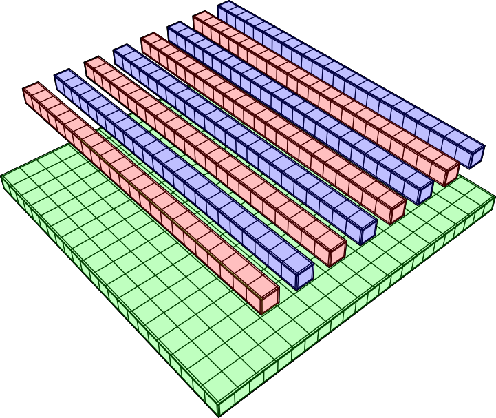
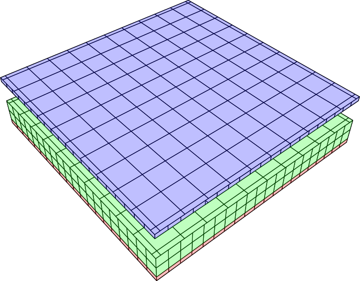

Introduction¶
FastCap2 is a venerable state-of-the art tool to compute the capacitance matrix from an arrangement of (ideal) conductors and dielectric surfaces in the quasi-static case.
“fastcap2” is a Python module that provides the functionality of the FastCap2 tool for integration into Python scripts.
Using the command-line tool is well described in the FastCap2 documentation. The tool takes input files describing the geometry in two different formats. The most commonly and easiest to use format is the “quickif” format.
TODO: more.
Building and installing¶
For building the command line tool, a CMake file is provided.
For building the Python module, a setup.py script is provided.
You can install the Python module from pip:
pip install fastcap2
Using the command line tool¶
The following sample code assumes that fastcap and the generator tools (cubegen, pltcapgen etc.) are in the path and you changed to the samples directory of the source package:
cd samples/sample1
Running fastcap with a list file (a geometry collection file)
fastcap -lall.lst
This will produce:
CAPACITANCE MATRIX, nanofarads
1 2 3
ct1%GROUP1 1 1.565 -1.203 -0.259
ct2%GROUP2 2 -1.203 1.565 -0.2591
cb%GROUP3 3 -0.259 -0.2591 0.8168
The arrangement in all.lst consists of a bottom plate and two conductors, resolved into four interdigitated stripes each:
The top conductors or colored red and blue, the bottom conductor is colored green. The connections between the fingers is not explicitly modelled. The connection is made by placing all four connected fingers in the same conductor group.
all.lst combines three files, describing the bottom plate and one strip each for the different conductors (cb.geo, ct1.geo and ct2.geo):
* Interdigit mesh
C ct1.geo 1.0 1.25 0.0 2.5 +
C ct1.geo 1.0 3.25 0.0 2.5 +
C ct1.geo 1.0 5.25 0.0 2.5 +
C ct1.geo 1.0 7.25 0.0 2.5
C ct2.geo 1.0 2.25 0.0 2.5 +
C ct2.geo 1.0 4.25 0.0 2.5 +
C ct2.geo 1.0 6.25 0.0 2.5 +
C ct2.geo 1.0 8.25 0.0 2.5
C cb.geo 1.0 0.0 0.0 0
You can also use fastcap with the provided geometry generators:
pltcapgen | fastcap
which produces:
CAPACITANCE MATRIX, picofarads
1 2
1%GROUP1 1 120.1 -98.28
2%GROUP1 2 -98.28 120.1
To generate postfile pictures of the geometry, use:
pltcapgen | fastcap -m
fastcap has a number of options, most of which configure postscript output:
Usage: 'fastcap [-o<expansion order>] [-d<partitioning depth>] [<input file>]
[-p<permittivity factor>] [-rs<cond list>] [-ri<cond list>]
[-] [-l<list file>] [-t<iter tol>] [-a<azimuth>] [-e<elevation>]
[-r<rotation>] [-h<distance>] [-s<scale>] [-w<linewidth>]
[-u<upaxis>] [-q<cond list>] [-rc<cond list>] [-x<axeslength>]
[-b<.figfile>] [-m] [-rk] [-rd] [-dc] [-c] [-v] [-n] [-f] [-g]
DEFAULT VALUES:
expansion order = 2
partitioning depth = set automatically
permittivity factor = 1.0
iterative loop ||r|| tolerance = 0.01
azimuth = 50
elevation = 50
rotation = 0
distance = 2 (0 => 1 object radius away from center)
scale = 1
linewidth = 1
upaxis = z
axeslength = 1
OPTIONS:
- = force conductor surface file read from stdin
-rs = remove conductors from solve list
-ri = remove conductors from input
-q = select conductors for at-1V charge distribution .ps pictures
-rc = remove conductors from all charge distribution .ps pictures
-b = superimpose lines, arrows and dots in .figfile on all .ps pictures
-m = switch to dump-ps-picture-file-only mode
-rk = remove key in shaded .ps picture file (use with -q option)
-rd = remove DIELEC type surfaces from all .ps picture files
-dc = display total charges in shaded .ps picture file (use with -q option)
-c = print command line in .ps picture file
-v = suppress showpage in all .ps picture files
-n = number faces with input order numbers
-f = do not fill in faces (don't rmv hidden lines)
-g = dump depth graph and quit
<cond list> = [<name>],[<name>],...,[<name>]
For details please see the original documentation.
Using the Python module¶
The fastcap2 module provides a basic class to describe a FastCap2 project. In the convention of FastCap2, the project is called a “Problem” (to solve):
import fastcap2 as fc2
problem = fc2.Problem()
To prepare and solve a problem - hence computing the capacitance matrix - three steps are required:
Configure the Problem object
Set up the geometry
Call solve to compute the capacitance matrix
Configuration is optional and may involve tweaking solver parameters such as partitioning_depth, expansion_order etc. or setting a title string which is used as the default description text for surfaces.
The geometry can be set up by loading geometry files (list files or multiple individual geometry files). Only “quickif” style geometry files are supported inside the Python module.
Here is an example for using the mentioned list file from the samples directory:
import fastcap2 as fc2
problem = fc2.Problem()
problem.load_list("all.lst")
cap_matrix = problem.solve()
print("Capacitance Matrix:\n" + repr(cap_matrix))
print("List of conductors:\n" + repr(problem.conductors()))
The result is somewhat ugly:
Capacitance Matrix:
[[1.5648896512731681e-09, -1.2032493588890681e-09, -2.5896004955919144e-10], [-1.2032493588890681e-09, 1.5648923641682211e-09, -2.591220453278022e-10], [-2.5896004955919144e-10, -2.591220453278022e-10, 8.167767219682793e-10]]
List of conductors:
['ct1%GROUP1', 'ct2%GROUP2', 'cb%GROUP3']
Some pretty-printing code is this:
def format_cap_matrix(cap_matrix, unit = 1e-12):
return "\n".join([ " " + "".join([ "%-8.1f" % (m / unit) for m in row ]) for row in cap_matrix ])
print("Capacitance Matrix (pF):\n" + format_cap_matrix(cap_matrix))
print("List of conductors:\n" + " " + ", ".join(problem.conductors()))
Which renders:
Capacitance Matrix (pF):
1564.9 -1203.2 -259.0
-1203.2 1564.9 -259.1
-259.0 -259.1 816.8
List of conductors:
ct1%GROUP1, ct2%GROUP2, cb%GROUP3
Instead of setting up the geometry from a file, it is possible to generate the geometry by code. For this, the Surface object is provided.
A surface is a collection of faces describing a material interface. A surface can wrap a volume of describe parts of a volume surface.
Surface objects are created and added to the Problem object to build the geometry. A single surface can be used multiple times with different transformations (translation usually) and in different contexts - i.e. as dielectric interface or conductor surface.
Surfaces can be populated by adding individual triangle or quad faces or by using the add_meshed_quad helper function which creates single quad resolved into multiple discrete faces (discretization is important to improve accuracy). A finer mesh can be selected for the edges.
Here is a thin two-plate capacitor build from a single surface placed two times with a vertical (z axis) displacement:
problem = fc2.Problem()
surface = fc2.Surface(name = "C")
surface.add_meshed_quad((0, 0, 0), (0, 10, 0), (10, 0, 0), edge_width = 0.2, num = 10)
problem.add(surface, d = (0, 0, -1.0))
problem.add(surface, d = (0, 0, 1.0))
cap_matrix = problem.solve()
The dimensions are given in MKS units (i.e. meters). The resulting capacitor therefore is 10 x 10 meters with a 2 meter plate distance. That gives a capacitance matrix of
800 -559
-559 800
picofarads.
A Python coded sample¶
The following sample describes a square two-plate capacitor semi-filled with a dielectric layer:
The bottom and top conductive capacitor plates are colored red and blue, the dielectric layer is colored green.
The geometry is build by the following code:
"""A demo script for fastcap2 Python module
The geometry is a square two-plate capacitor with a plate
thickness of 0.2 and a plate distance of 2.0.
The gap is partially filled with a dielectic layer of
thickness 1.0 above the bottom plate. The volume above
that layer is air (k = 1).
"""
import fastcap2 as fc2
problem = fc2.Problem()
# enable printing of logs:
# problem.verbose = True
problem.perm_factor = 1.0
# PS picture file or None for no file
ps_file = "cap.ps"
# height of dielectic layer
diel_height = 1.0
# dielectric layer k
diel_k = 1.5
# distance of top plate vs. bottom plate (air + dielectric layer)
top_plate = 2.0
# width and length of capacitor
width = 10.0
# capacitor top and bottom plate thickness
cond_height = 0.2
# mesh resolution
max_dim = 0.5
# inside reference point for face orientation of sides
r = (0, 0, 0)
plate = fc2.Surface("C")
plate.add_meshed_quad((-0.5 * width, -0.5 * width, 0), (-0.5 * width, 0.5 * width, 0), (0.5 * width, -0.5 * width, 0), edge_width = 0.2, max_dim = 1)
cside = fc2.Surface("C")
cside.add_meshed_quad((-0.5 * width, -0.5 * width, 0), (-0.5 * width, 0.5 * width, 0), (-0.5 * width, -0.5 * width, cond_height), max_dim = max_dim)
dside = fc2.Surface("D")
dside.add_meshed_quad((-0.5 * width, -0.5 * width, 0), (-0.5 * width, 0.5 * width, 0), (-0.5 * width, -0.5 * width, diel_height), max_dim = max_dim)
# the bottom conductor - group "B"
# bottom plate
problem.add(plate, group = "B", d = (0, 0, -cond_height))
# sides
for a in range(0, 360, 90):
problem.add(cside, group = "B", d = (0, 0, -cond_height), rotz = a)
# the interface between bottom conductor and dielectric cap
problem.add(plate, group = "B", d = (0, 0, 0), outside_perm = diel_k)
# the dielectric cap
# top plate
problem.add(plate, d = (0, 0, diel_height),
kind = fc2.Problem.DIELEC, inside_perm = diel_k, outside_perm = 1.0, r = r)
# sides
for a in range(0, 360, 90):
problem.add(dside, kind = fc2.Problem.DIELEC, inside_perm = diel_k, outside_perm = 1.0, r = r, rotz = a)
# the top conductor - group "T"
# bottom plate
problem.add(plate, group = "T", d = (0, 0, top_plate))
# top plate
problem.add(plate, group = "T", d = (0, 0, top_plate + 0.2))
# sides
for a in range(0, 360, 90):
problem.add(cside, group = "T", d = (0, 0, top_plate), rotz = a)
# computes the capacitance matrix
cap_matrix = problem.solve()
def format_cap_matrix(cap_matrix, unit = 1e-12):
return "\n".join([ " " + "".join([ "%-8.1f" % (m / unit) for m in row ]) for row in cap_matrix ])
print("Capacitance Matrix:\n" + format_cap_matrix(cap_matrix))
which renders:
Capacitance Matrix:
946.5 -683.8
-683.8 929.1
For building the geometry, a number of surfaces is used.
It is important to note that you cannot place surfaces in a face-to-face touching way. Instead, the geometry has to be divided into separate surfaces, each forming the boundary between functionally different volumes (conductive, dielectric, air).
Also, reference points are needed to define the inside and outside face of the dielectric surfaces.